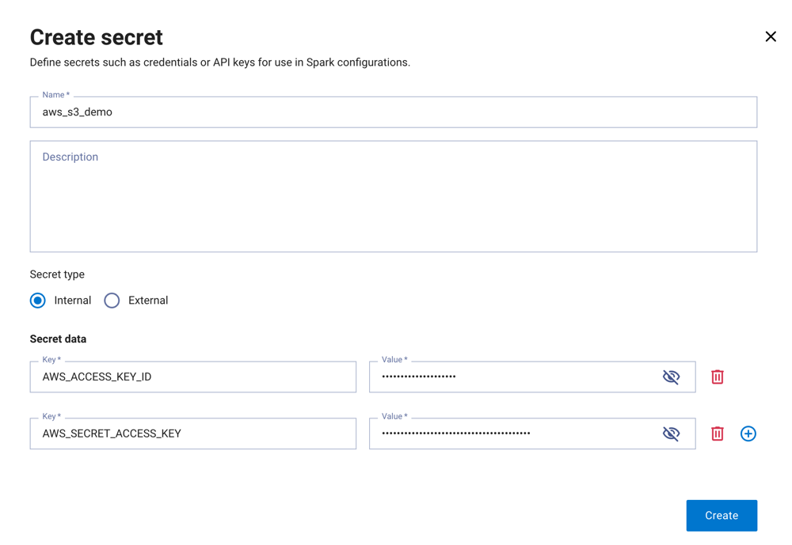

Secrets management#
Dell Data Processing Engine (DDPE) provides a secrets manager that lets you
securely store and manage sensitive credentials used by Spark batch jobs and
Spark Connect servers. Secrets are referenced in workload configurations using
the ${secretName:key} syntax, where secretName is the name of the secret
and key is one of its key-value pair keys.
There are two types of secrets:
Internal: Key-value pairs stored and managed directly within DDPE.
External: References to secrets stored in an external provider. A platform administrator must configure a secret provider before external secrets can be created.
Secrets can be managed in the UI or with the CLI.
Secrets providers#
Secret providers are External Secrets Operator
(ESO) cluster
secret store connections configured and managed by a platform administrator.
Once a provider is configured, users with MANAGE privilege on secrets
providers can create external secrets that reference paths in that provider.
For more information, see the DDPE administrator guide.
Privileges#
The following privileges control access to secrets and secret providers. See access control for instructions on granting and revoking these privileges.
Secrets#
USE: Reference a secret value in Spark job arguments, configuration options, and environment variables using the${secretName:key}format.MANAGE: Create, update, or delete the secret.
Secrets providers#
MANAGE: Create secrets that reference values in an external provider.
Secrets UI#
The Secrets UI pane lets you create and manage secrets for your Dell Data Processing Engine environment.
You must have the Spark runtime user interface entity enabled on your role to access the Secrets pane.
View secrets#
The Secrets pane lists the secrets available in your environment.
The following columns are displayed:
Name: The name given to the secret. Click the name to view the secret’s details.
Description: An optional description of the secret.
Secret type: The type of secret, either
ExternalorInternal.Secret provider: The external provider used to store the secret, if applicable.
Owner: The user who created the secret.
Date created: The date and time the secret was created.
Click any column header to sort the list in ascending or descending order.
Use a secret’s options menu to edit or delete it.
Create a secret#
To create a new secret:

In the Secrets pane, click Create secret.
Enter a unique Name, an optional Description, and select a Secret type:
Internal: enter one or more key-value pairs.
External: select a Provider, then enter the Path and Key for the secret in the external provider.
Click Create.
Edit a secret#
To edit an existing secret:
In the Secrets pane, open the options menu for the secret and click Edit.
Update the desired fields.
Click Save.
Delete a secret#
To delete a secret:
In the Secrets pane, open the options menu for the secret and click Delete.
Confirm the deletion.
Warning
Deleting a secret is permanent and cannot be undone.
Use secrets in a Spark job#
When creating a Spark batch job or Spark Connect
server, you can reference a secret value using
the ${secretName:key} syntax in the following fields:
Note
To reference a secret, you must have the USE privilege on it. The owner of a
secret can reference it without this privilege.
Arguments: Enter the secret expression directly in the Argument field:
${example-db-credentials:password}Configuration: Enter the Spark configuration property name in the Field field and the secret expression in the Value field:
spark.example.db.password = ${example-db-credentials:password}Environment variables: Enter the environment variable name in the Name field and the secret expression in the Value field:
EXAMPLE_DB_PASSWORD = ${example-db-credentials:password}
Secrets CLI#
The following examples show how to use the secrets CLI commands for common secrets management tasks.
List secrets#
To list all secrets in your environment:
./dell-data-processing-engine secret list
Create an internal secret#
Create an internal secret with a single key-value pair using --from-literal:
./dell-data-processing-engine secret create --name example-db-credentials --from-literal password=example-password
Create a secret from a file, where the filename is used as the key:
./dell-data-processing-engine secret create --name example-tls-cert --from-file /path/to/cert.pem
Create a secret from an env file, where each KEY=VALUE line is a separate
secret entry:
./dell-data-processing-engine secret create --name example-app-config --description "App environment variables" --from-env-file /path/to/app.env
Create an external secret#
Create a secret that references a path in an external provider:
./dell-data-processing-engine secret create --name example-vault-password --provider example-vault --path secret/data/prod/db --key password
View secret details#
Get details for a secret by name:
./dell-data-processing-engine secret get name=example-db-credentials
To display the stored secret values, add --reveal:
./dell-data-processing-engine secret get name=example-db-credentials --reveal
Update a secret#
Update a secret. If you update any secret entries, include all entries you want to keep, as any existing entries not included in the command are removed:
./dell-data-processing-engine secret update name=example-db-credentials --from-literal password=example-new-password --from-literal username=example-user
Delete a secret#
Delete a secret by name:
./dell-data-processing-engine secret delete name=example-db-credentials
Use a secret in a batch job#
Reference a secret value in a Spark job submission using the
${secretName:key} syntax. You must have USE privilege on the secret, unless
you are the owner of the secret.
Reference a secret in a configuration option:
./dell-data-processing-engine submit \
--conf spark.example.db.password='${example-db-credentials:password}' \
--class com.example.MyApp "local:///opt/spark/examples/jars/example-app.jar"
Reference a secret as an application argument:
./dell-data-processing-engine submit \
--class com.example.MyApp "local:///opt/spark/examples/jars/example-app.jar" \
'${example-db-credentials:password}'
Reference a secret as an environment variable:
./dell-data-processing-engine submit \
--env EXAMPLE_DB_PASSWORD='${example-db-credentials:password}' \
--class com.example.MyApp "local:///opt/spark/examples/jars/example-app.jar"